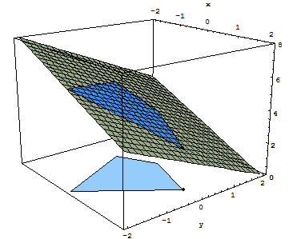
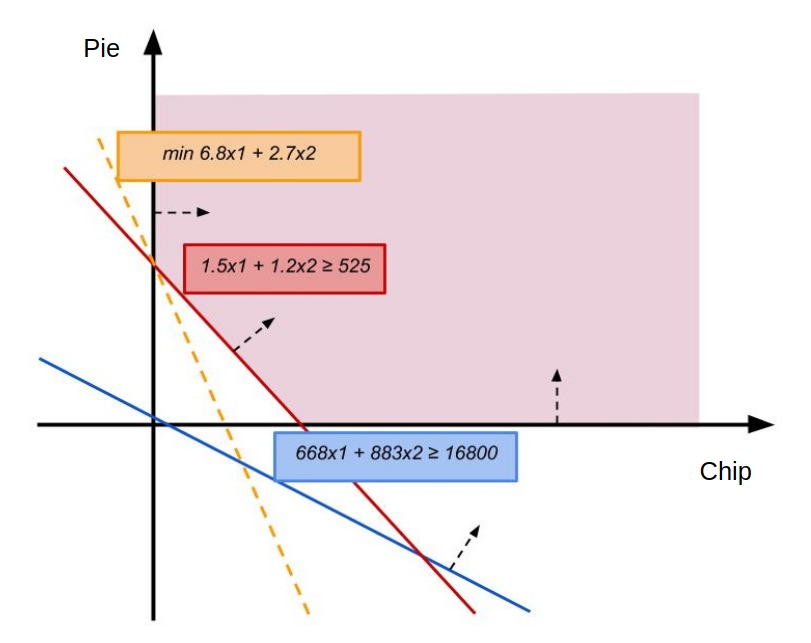

Linear Programming - Simplex method
Slide URL: ?
Wei Zhong
Introduction
Dantzig's simplex algorithm (not to be confused with Nelder–Mead' simplex method) is a popular algorithm for linear programming.
It was developed by George Dantzig when he solved two open statistics problems listed by his advisor on the blackboard, at that time he had mistaken the unsolved problems for homework after arriving late to the lecture.
Problem definition
In optimization problems, linear programming is a special case of convex optimization where the objective function is linear and the constraints consist of linear equalities and inequalities.
$$ \left\{ \begin{array}{llr} \min & z = c^T x & \\ s.t. & Ax \le b & (\text{standard form}) \\ & x \ge \zeros \end{array} \right. $$Example
Every week it is suggested to consume at least 16800KJ energy and 75g protein, you want to stay one week at home just eating snacks, what to buy in order to minimize the price?
| Snacks | Energy (KJ) | Protein (g) | Price ($) |
|---|---|---|---|
| Potato chips | 668 | 1.5 | 6.8 |
| Cherry pie | 883 | 1.2 | 2.7 |
| Snacks | Energy (KJ) | Protein (g) | Price ($) |
|---|---|---|---|
| Potato chips | 668 | 1.5 | 6.8 |
| Cherry pie | 883 | 1.2 | 2.7 |
$$ \left\{ \begin{array}{llr} \min & z = 6.8x_1+2.7x_2 & \\ s.t. & 668x_1+883x_2 \ge 16800 \\ & 1.5x_1+1.2x_2 \ge 525 \\ & x \ge \zeros \end{array} \right. $$
Geometry point of view
$$ \left\{ \begin{array}{llr} \min & z = 6.8x_1+2.7x_2 & \\ s.t. & 668x_1+883x_2 \ge 16800 \\ & 1.5x_1+1.2x_2 \ge 525 \\ & x \ge \zeros \end{array} \right. $$
What if you have more choices?
(rather than chips and pie)
Everything starts from Canonical form
$$ \left\{ \begin{array}{llr} \min & z = c^T x & \\ s.t. & Ax \color{red}{=} b & (\text{canonical form}) \\ & x \ge \zeros \end{array} \right. $$
The matrix $A_{m \x n}$ is full-rank, and we can write $A$ in a form such that it separates its basis and non-basis: $A = \mat{B & N}$, similarly $c^T = \mat{c_B^T & c_N^T}$ and $x = \mat{x_B \\ x_N}$.
Reformulate
$$ \begin{align} && \mat{B & N} \mat{x_B \\ x_N} &= b \\ \Leftrightarrow && x_B + B^{-1} N x_N &= B^{-1} b \\ \tag{1} \end{align} $$
$$ \begin{align} && z &= c^T x = c_B^T x_B + c_N^T x_N \\ \Leftrightarrow && &= c_B^T (B^{-1} b - B^{-1} N x_N) + c_N^T x_N \\ \Leftrightarrow && &= c_B^T B^{-1} b - c_B^T B^{-1} N x_N + c_N^T x_N \\ \Leftrightarrow && &= c_B^T B^{-1} b - (c_B^T B^{-1} N - c_N^T) x_N \\ \tag{2} \end{align} $$
Reformulate
To make the form pretty, introduce new notations $\bar{A}$ and $\bar{b}$:
$$ \left\{ \begin{align} \bar{A}_{m \x n} &= B^{-1} A = B^{-1} \mat{B & N} = \mat{E & B^{-1} N} \\ \bar{b}_{m \x 1} &= B^{-1} b \end{align} \right. $$
Using this notation, we can rewrite equation (1) and (2)
$$ \begin{align} \tag{3} z &= c_B^T \bar{b} - \big( c_B^T (B^{-1} N) - c_N^T \big) x_N = c_B^T \bar{b} - \sum_{j=m+1}^n \left( c_B^T \bar{A_j} - c_j \right) x_j \\ \tag{4} \bar{A} x &= \mat{E & B^{-1} N} \mat{x_B \\ x_N} = \bar{b} \end{align} $$
Reformulate
To simplify (3) a little bit, imagine a vector $\xi^T$
$$ \mat{0 & \dots & \underbrace{0}_{\text{#m element}} & \overbrace{c_B^T \bar{A}_{m+1} - c_{m+1}}^{\text{#m+1 element}} & c_B^T \bar{A}_{m+2} - c_{m+2} & \dots & c_B^T \bar{A_{n}} - c_{n}} _ {1 \x n} $$
so that (3) can be rewritten as
$$ z = c_B^T \bar{b} - \xi^T x \tag{5} $$
Reformulated form - Simplex algorithm input
$$ \left\{ \begin{array}{llr} \min & z = c_B^T \bar{b} - \xi^T x & \\ s.t. & \bar{A} x = \mat{E & B^{-1} N} \mat{x_B \\ x_N} = \bar{b} \\ & x \ge \zeros \end{array} \right. $$
After selecting a "basis", the we can solve a $x_B = \bar{b}$ and $x_N = \zeros$ (uniquely) so it satisfy above constraints as long as $\bar{b} \ge \mathbf{0}$ (i.e. "feasible").
We call this solution $\bar{x}$ a basic feasible solution (BFS)
$$
\tag{6}
\bar{x} = \mat{\bar{b} \\ \mathbf{0}} \text{ and } \bar{b} \ge \zeros
$$
we may assume that $\bar{b} \ge \zeros$ (if it is not the case, just negate the corresponding rows of $\bar{A}$).
What is the benefit of this reformulated form? (we are done if $\xi^T \le \zeros$)
Convert to reformulated form (an example)
$$ \left\{ \begin{array}{ll} \min & z = x_1 + x_2 - 3x_3 \\ s.t. & x_1 - 2x_2 + x_3 \le 11 \\ & 2x_1 + x_2 -4x_3 \ge 3 \\ & x_1 - 2 x_3 = 1 \\ & x \ge \zeros \end{array} \right. $$
introduce slack variables $s_4, s_5$ and artificial variables $a_6, a_7$,
$$ \left\{ \begin{array}{lrll} \min & z = x_1 + x_2 - 3x_3 &+ M(\color{red}{a_6 + a_7}) \\ s.t. & x_1 - 2x_2 + x_3 & & \color{red}{+ s_4} && &= 11 \\ & 2x_1 + x_2 -4x_3 &- \color{red}{s_5} && \color{red}{+ a_6} & &= 3 \\ & x_1 - 2 x_3 & &&& \color{red}{+ a_7} &= 1 \\ & x, \color{red}{a, s} \ge \zeros \end{array} \right. $$
If for some $k$, there is $\xi_k > 0$
Find a scalar $\theta > 0$ and a vector $\Delta$, we are hoping $c^T(\bar{x} + \theta\Delta) < c^T \bar{x}$, which implies $c^T \Delta < 0$
$$ \begin{array}{lrl} \tag{8} \text{how about} & c^T \Delta &= - \xi_k \\ \Rightarrow & \mat{c^T_B & c^T_N} \Delta &= - (c_B^T \bar{A}_{k} - c_{k}) \\ \Rightarrow & \Delta &= \mat{-\bar{A}_{k} \\ 0 \\ \vdots \\ 0 \\1 \\0 \\ \vdots } = \mat{- \bar{A}_{k} \\ \zeros} + e_k \end{array} $$
Is $(\bar{x} + \theta\Delta)$ a BFS?
For equality constraints
$$ \begin{align} & A(\bar{x} + \theta \Delta) \\ =& A\bar{x} + \theta \mat{B & N} (\mat{- \bar{A}_{k} \\ \zeros} + e_k) \\ =& A\bar{x} + \theta \mat{B & N} (\mat{- B^{-1} {A}_{k} \\ \zeros} + e_k) \\ =& A\bar{x} + 0 = b \end{align} $$
Is $(\bar{x} + \theta\Delta)$ a BFS?
For inequality constraints (feasibility), it requires
$$ \bar{x} + \theta \Delta = \mat{ \bar{b} \\ \zeros} + \theta\mat{- \bar{A}_{k} \\ \zeros} + \theta e_k = \mat{\bar{b} - \theta \bar{A}_{k} \\ \zeros} + \theta e_k \ge \zeros $$
Is $(\bar{x} + \theta\Delta)$ a BFS?
For still being corresponding to a basis (linear independent), if we assume the resulting $A_1, A_2, ... A_{r-1}, \color{red}{A_k}, A_{r+1}, ... A_m$ is linearly dependent, then there exits some coefficients $y_i$ such that $A_k = \sum_{i=1, i\neq r}^m y_i A_i $.
On the other hand, because
$A_k = B(B^{-1}A_k) = \mat{A_1 & A_2 ... A_m} \mat{\bar{A}_{k,1} \\ \bar{A}_{k,2} \\ ... \\ \bar{A}_{k,m}}$.
Subtract two equations above, we get
$ 0 = \bar{A}_{k,r} A_r + \sum_{i=1, i\neq r}^m (\bar{A}_{k,1} - y_i)A_i $.
Since $\bar{A}_{k,r} > 0$, it follows $A_1, A_2 ... A_m$ are linearly dependent, we see contradiction.
Simplex Tableau
We will show the iteration of step into lower solution can be represented and done using only elementary row operations in a table called "Simplex Tableau"
$$ \begin{array}{c|c} \qquad \xi^T \qquad & z_0 = c_B^T \bar{b} \\ \hline \bar{A} & x_B = \bar{b} \\ \end{array} $$
The first row is called "objective row". Notice the $\xi^T_B = \{c_B^T \bar{A_{j}} - c_{j} \}_j = \{ -c_j \}_j$ if we manage to get a basis where $c_B^T = \zeros$ by using artificial variable.
Simplex Tableau - Pivoting in $\bar{A} | \bar{b}$
At some iteration, we have fixed on pivot point $k, r$, and $t$ represents the other rows in $\bar{A} | \bar b$.
Perform elementary row operations to make $\bar{A}_{k,r} \leftarrow 1$ and $\forall t \neq r, \bar{A}_{k,t} \leftarrow 0$:
$$ \begin{array}{c|c} \ldots \xi^T_k \ldots & z_0 \\ \hline \vdots & \vdots \\ \bar{A}_{k,r} \leftarrow \bar{A}_{k,r} \times \frac 1 {\bar{A}_{k,r}} = 1 & \bar b_r \leftarrow \bar b_r \times \frac 1 {\bar{A}_{k,r}} = \theta \\ \vdots & \vdots \\ \bar{A}_{k,t} \leftarrow \bar{A}_{k,t} -\bar{A}_{k,r} \frac {\bar{A}_{k,t}} {\bar{A}_{k,r}} = 0 & \bar b_t \leftarrow \bar b_t - \bar b_r \frac {\bar{A}_{k,t}} {\bar{A}_{k,r}} = \bar b_t - \theta \bar{A}_{k,t} \\ \vdots & \vdots \\ \end{array} $$
The updated RHS becomes $\bar{x} + \theta\Delta$ (notice at r-th row in RHS, the exiting variable gets dropped and replaced by the entering variable).
Simplex Tableau - Pivoting in objective row
Perform a column swap to move identity matrix to the left-most (notice that, column swaps produces a new simplex tableau that is equivalent to the original problem)
$$ \begin{array}{cccccccccc|c} 0 & ... & \xi_k & \dots & 0 & \xi_m & ... & \xi_j & ... & \xi_n & z_0 \\ \hline 1 & & & & & &&&&& \\ & \ddots & & & & \bar{A}\new_m & ... & \bar{A}\new_j & ... & \bar{A}\new_n & \bar b\new \\ & & 1 & & & &&&&& \\ & & & \ddots & & &&&&& \\ & & & & 1 & &&&&& \\ \end{array} $$
Apply row operation again, this time we want to zero the objective row elements who are on top of the identity matrix, i.e., we multiply $-\xi_k$ and add onto the objective row... $$ \left\{ \begin{array}{lrlr} \xi_j &\leftarrow &\xi_j - \mat{0 & ... & 0 & \xi_k & 0 & ... & 0} \bar{A}\new_j &= \xi_j - \xi^T_B \bar{A}\new_j & j > m\\ z_0 &\leftarrow &z_0 - \mat{0 & ... & 0 & \xi_k & 0 & ... & 0} \bar{b}\new &= z_0 - \xi^T_B \bar{b}\new & \\ \end{array} \right. $$
Simplex Tableau - Pivoting in objective row (2)
In order to know if the updates in previous slide would work to the next iteration, let us think $z$ as a variable, since initially $z + \xi^T = z_0$, we can think the tableau is actually representing: $$ \mat{ 1 & \qquad \xi^T \qquad \\ \hline \zeros &\bar{A} } \cdot \mat{ z \\ \mathbf{x} } = \mat{ z_0 \\ \mathbf{\bar{b}} } $$ thus the previous row operations would not stop the equation $ z + \xi^T x = z_0 $ holding true.
Now apply the same derivation in (1) and (2): $$ \begin{align} && z + \xi^T x &= z_0 \\ \Rightarrow && z + \xi_B^T (\bar{b}\new - \bar{A}_N\new x_N) + \xi^T_N x_N &= z_0 \\ \Rightarrow && z + (\xi_N^T - \xi_B^T \bar{A}_N\new) x_N &= z_0 - \xi_B^T \bar{b}\new \\ \Rightarrow && z + \mat{\zeros & \xi_N^T - \xi_B^T \bar{A}_N\new} \mat{x_B \\ x_N} &= z_0 - \xi_B^T \bar{b}\new \end{align} $$
You might find $\xi_N^T - \xi_B^T \bar{A_N}$ is exactly updated $\xi^T$, and $ z_0 - \xi_B^T$ is the updated minimal value, and this similar form will keep previous method still working in the next iteration.
Complexity
The worst-case complexiy is exponential. Because the number of vertices is equal to choosing $m$ basis from $n$ variables, $n \choose m$ reaches maximum if $m = \lceil \frac n2 \rceil \text{ or } \lfloor \frac n2 \rfloor$ depending on even or odd, it is exponential because $2^{n/2} < \binom{n}{n/2} < 2^{n}$ holds.
Nevertheless, the simplex method is very efficient in practice, generally taking small constants polynomial time with regarding to the number of equality constraints, and converging in expected polynomial time for certain distributions of random inputs (Nocedal and Wright 1999, Forsgren 2002).